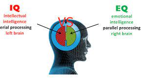
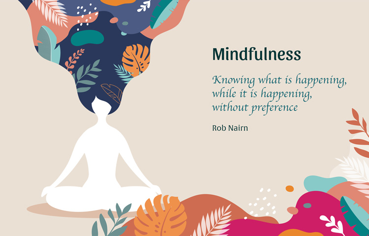

IQ (Intelligence Quotient) is score derived from one of several standardized tests designed to assess an individual's intelegence IQ is used to determine academic abilities and identify individuals with off the chart intelligence or mental challenges.
EQ (Emotional Intelligence or Emotional Quotient) is defined as an invidual's ability to identify, evaluate, control, and express emotions. People with high EQ usually make great leaders and team players because of their ability to understand, empathize, and connect with the people around them.
Which one is more important? IQ or EQ?
EQ is a better indicator of success in the workplace and is used to identify leaders, good team players, and people who best work by themselves. This quote is relevant to me about IQ and EQ "A high IQ will get you through school, but a high EQ will get you through life" People with high EQ generally achieve more, excel at teamwork and service and take more initiative. Several corporations and large organizations have mandated EQ tests during the hiring process and have coaching seminars on emotional and social skills.
The first component of emotional intelligence and the basis for developing all of the other emotional intelligence skills is mindfullness
I never think about this "mindfullness" thing until now. I search up google what is the meaning and how to engage and practice this thing in my life. I found this article that help me to understand how to practice mindfullness
7 key attitudes of mindfullness (by Kabat-Zinn)
The other component of emotional intelligence is conscious listening. What is the meaning of that?
Concious listening is the act of being intentionally present during communication between yourself and another while being aware of your own and the other's feelings and needs. How to engage and practice conscious listening?
There are 8 ways to do it as you can see in the picture below.

I hope we have a better understanding about IQ and EQ now and how to improve our EQ and don't forget to practice it in our daily life